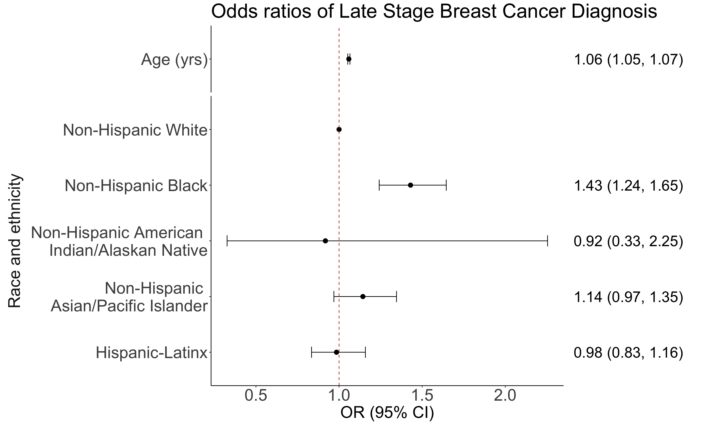

Lesson 10: Multiple Logistic Regression
Learning Objectives
Construct and fit a multiple logistic regression model
Test for significance of individual coefficients or sets of coefficients
Estimate the predicted probability of our outcome
Present the odds ratios
Interpret odds ratios for coefficients while adjusting for other variables
Last class
Looked at simple logistic regression for binary outcome with
- One continuous predictor \[\text{logit}(\pi(X)) = \beta_0 + \beta_1 \cdot X\]
- One binary predictor \[\text{logit}\left(\pi(X) \right) = \beta_0 + \beta_1 \cdot I(X=1)\]
- One multi-level predictor \[\text{logit}\left(\pi(X) \right) = \beta_0 + \beta_1 \cdot I(X=b) + \beta_2 \cdot I(X=c) + \beta_3 \cdot I(X=d)\]
Breast Cancer example
For breast cancer diagnosis example, recall:
- Outcome: early or late stage breast cancer diagnosis
Primary Covariate: Race/ethnicity
- While non-Hispanic white individuals are more likely to be diagnosed with breast cancer, non-Hispanic black individuals have the highest death rate
- Racism affecting health care quality
Additional covariate: Age
- Also a risk factor for cancer diagnosis
We want to fit a multiple logistic regression model with both risk factors included as dependent variables
Learning Objectives
Introduction to Multiple Logistic Regression
Multiple Logistic Regression Model
Fitting the Multiple Logistic Regression Model
Breast Cancer Example: Population Model
- We can fit a logistic regression model with both race and ethnicity and age:
\[ \begin{aligned} \text{logit}\left(\pi(x_i)\right) = & \beta_0 +\beta_1 \cdot I \left( R/E = H/L \right) +\beta_2 \cdot I \left( R/E = NH AIAN \right) \\ & +\beta_3 \cdot I \left( R/E = NH API \right) +\beta_4 \cdot I \left( R/E = NH B \right) +\beta_5 \cdot Age \end{aligned}\]
- 6 total coefficients (\(\beta_0\) to \(\beta_6\))
Fitting Multiple Logistic Regression Model
multi_bc = glm(Late_stage_diag ~ Race_Ethnicity + Age_c,
data = bc, family = binomial)
summary(multi_bc)
Call:
glm(formula = Late_stage_diag ~ Race_Ethnicity + Age_c, family = binomial,
data = bc)
Coefficients:
Estimate Std. Error z value
(Intercept) -1.038389 0.027292 -38.048
Race_EthnicityHispanic-Latino -0.015424 0.083653 -0.184
Race_EthnicityNH American Indian/Alaskan Native -0.085704 0.484110 -0.177
Race_EthnicityNH Asian/Pacific Islander 0.133965 0.083797 1.599
Race_EthnicityNH Black 0.357692 0.071789 4.983
Age_c 0.057151 0.003209 17.811
Pr(>|z|)
(Intercept) < 2e-16 ***
Race_EthnicityHispanic-Latino 0.854
Race_EthnicityNH American Indian/Alaskan Native 0.859
Race_EthnicityNH Asian/Pacific Islander 0.110
Race_EthnicityNH Black 6.27e-07 ***
Age_c < 2e-16 ***
---
Signif. codes: 0 '***' 0.001 '**' 0.01 '*' 0.05 '.' 0.1 ' ' 1
(Dispersion parameter for binomial family taken to be 1)
Null deviance: 11861 on 9999 degrees of freedom
Residual deviance: 11484 on 9994 degrees of freedom
AIC: 11496
Number of Fisher Scoring iterations: 4Breast Cancer Example: Fitted Model
- We now have the fitted logistic regression model with both race and ethnicity and age:
\[ \begin{aligned} \text{logit}\left(\widehat{\pi}(x_i)\right) = &-4.56 -0.02 \cdot I \left( R/E = H/L \right) -0.09 \cdot I \left( R/E = NH AIAN \right) \\ & +0.13 \cdot I \left( R/E = NH API \right) +0.36 \cdot I \left( R/E = NH B \right) +0.06 \cdot Age \end{aligned}\]
- 6 total coefficients (\(\widehat{\beta}_0\) to \(\widehat{\beta}_6\))
Learning Objectives
Testing Significance of the Coefficients
- Refer to Lesson 6 for more information on each test!!
We use the same three tests that we discussed in Simple Logistic Regression to test individual coefficients
Wald test
- Can be used to test a single coefficient
Score testLikelihood ratio test (LRT)
- Can be used to test a single coefficient or multiple coefficients
- Textbook and our class focuses on Wald and LRT only
A note on wording
When I say “test a single coefficient” or “test multiple coefficients” I am referring to the \(\beta\)’s
- A single variable can have a single coefficient
- Example: testing age
- A single variable can have multiple coefficients
- Example: testing race and ethnicity
- Muliple variables will have multiple coefficients
- Example: testing age and race and ethnicity together
- A single variable can have a single coefficient
All three tests together

Wald test (1/3)
Very similar to a t-test!
- But slightly different because it based in our likelihood function
Assumes test statistic W follows a standard normal distribution under the null hypothesis
Test statistic: \[W=\frac{{\hat{\beta}}_j}{se({\hat{\beta}}_j)}\sim N(0,1)\]
- where \(\widehat{\beta}_j\) is a MLE of coefficient \(j\)
95% Wald confidence interval: \[{\hat{\beta}}_1\pm1.96 \cdot SE_{{\hat{\beta}}_j}\]
The Wald test is a routine output in R (
summary()ofglm()output)- Includes \(SE_{{\hat{\beta}}_j}\) and can easily find confidence interval with
tidy()
- Includes \(SE_{{\hat{\beta}}_j}\) and can easily find confidence interval with
Wald test procedure with confidence intervals
Set the level of significance \(\alpha\)
Specify the null ( \(H_0\) ) and alternative ( \(H_A\) ) hypotheses
- In symbols
- In words
- Alternative: one- or two-sided?
Calculate the confidence interval and determine if it overlaps with null
- Overlap with null (usually 0 for coefficient) = fail to reject null
- No overlap with null (usually 0 for coefficient) = reject null
Write a conclusion to the hypothesis test
- What is the estimate and its confidence interval?
- Do we reject or fail to reject \(H_0\)?
- Write a conclusion in the context of the problem
Wald test (1/3)
- From our multiple logistic regression model:
\[ \begin{aligned} \text{logit}\left(\pi(x_i)\right) = & \beta_0 +\beta_1 \cdot I \left( R/E = H/L \right) +\beta_2 \cdot I \left( R/E = NH AIAN \right) \\ & +\beta_3 \cdot I \left( R/E = NH API \right) +\beta_4 \cdot I \left( R/E = NH B \right) +\beta_5 \cdot Age \end{aligned}\]
- We can only test the coefficient for age using the Wald test!
Example 1: Single, continuous variable: Age
Likelihood ratio test (1/3)
Likelihood ratio test answers the question:
- For a specific covariate, which model tell us more about the outcome variable: the model including the covariate or the model omitting the covariate?
- Aka: Which model is more likely given our data: model including the covariate or the model omitting the covariate?
Test a single coefficient by comparing different models
- Very similar to the F-test
Important: LRT can be used conduct hypothesis tests for multiple coefficients
- Just like F-test, we can test a single coefficient, continuous/binary covariate, multi-level covariate, or multiple covariates
Likelihood ratio test (2/3)
Likelihood ratio test answers the question:
- For a specific covariate, which model tell us more about the outcome variable: the model including the covariate or the model omitting the covariate?
- For a set of covariates, which model tell us more about the outcome variable: the model including the set of covariates or the model omitting the set of covariates?
Likelihood ratio test (3/3)
If testing single variable and it’s continuous or binary, still use this hypothesis test:
- \(H_0\): \(\beta_j = 0\)
- \(H_1\): \(\beta_j \neq 0\)
If testing single variable and it’s categorical with 𝒊 groups (𝑖>2), use this hypothesis test:
- \(H_0\): \(\beta_j=\beta_{j+1}=\ldots=\beta_{j+i-1}=0\)
- \(H_1\): at least one of the above \(\beta\)’s is not equal to 0
If testing a set of variables, use this hypothesis test:
- \(H_0\): \(\beta_1=\beta_{2}=\ldots=\beta_{k}=0\)
- \(H_1\): at least one of the above \(\beta\)’s is not equal to 0
LRT procedure
Set the level of significance \(\alpha\)
Specify the null ( \(H_0\) ) and alternative ( \(H_A\) ) hypotheses
- In symbols
- In words
- Alternative: one- or two-sided?
Calculate the test statistic and p-value
Write a conclusion to the hypothesis test
- Do we reject or fail to reject \(H_0\)?
- Write a conclusion in the context of the problem
Likelihood ratio test (3/3)
- From our multiple logistic regression model:
\[ \begin{aligned} \text{logit}\left(\pi(x_i)\right) = & \beta_0 +\beta_1 \cdot I \left( R/E = H/L \right) +\beta_2 \cdot I \left( R/E = NH AIAN \right) \\ & +\beta_3 \cdot I \left( R/E = NH API \right) +\beta_4 \cdot I \left( R/E = NH B \right) +\beta_5 \cdot Age \end{aligned}\]
We can test a single coefficient or multiple coefficients
Single, continuous variable: Age
Single, >2 categorical variable: Race and Ethnicity
Set of variables: Race and Ethnicity, and Age
Example 1: Single, continuous variable: Age
Example 2: Single, >2 categorical variable: Race and Ethnicity
Example 3: Set of variables: Race and Ethnicity, and Age
Notes on Likelihood Ratio Test
Likelihood ratio test is only suitable to test “nested” models
“Nested” models means the bigger model (full model) contains all the independent variables of the smaller model (reduced model)
We cannot compare the following two models using LRT:
Model 1: \[ \begin{aligned} \text{logit}\left(\pi(x_i)\right) = & \beta_0 +\beta_1 \cdot I \left( R/E = H/L \right) +\beta_2 \cdot I \left( R/E = NH AIAN \right) \\ & +\beta_3 \cdot I \left( R/E = NH API \right) +\beta_4 \cdot I \left( R/E = NH B \right) \end{aligned}\]
Model 2: \[\begin{aligned} \text{logit}\left(\pi(x_i)\right) = & \beta_0+\beta_1 \cdot Age \end{aligned}\]
If the two models to be compared are not nested, likelihood ratio test should not be used
Learning Objectives
Estimated/Predicted Probability for MLR
Basic idea for predicting/estimating probability stays the same
Calculations will be slightly different
- Especially for the confidence interval
Recall our fitted model for late stage breast cancer diagnosis: \[ \begin{aligned} \text{logit}\left(\widehat{\pi}(x_i)\right) = &-4.56 -0.02 \cdot I \left( R/E = H/L \right) -0.09 \cdot I \left( R/E = NH AIAN \right) \\ & +0.13 \cdot I \left( R/E = NH API \right) +0.36 \cdot I \left( R/E = NH B \right) +0.06 \cdot Age \end{aligned}\]
Predicted Probability
We may be interested in predicting probability of having a late stage breast cancer diagnosis for a specific age.
The predicted probability is the estimated probability of having the event for given values of covariate(s)
Recall our fitted model for late stage breast cancer diagnosis: \[ \begin{aligned} \text{logit}\left(\widehat{\pi}(x_i)\right) = &-4.56 -0.02 \cdot I \left( R/E = H/L \right) -0.09 \cdot I \left( R/E = NH AIAN \right) \\ & +0.13 \cdot I \left( R/E = NH API \right) +0.36 \cdot I \left( R/E = NH B \right) +0.06 \cdot Age \end{aligned}\]
We can convert it to the predicted probability: \[\hat{\pi}\left(X\right)=\frac{\exp({\hat{\beta}}_0+{\hat{\beta}}_1X)}{1+\exp({\hat{\beta}}_0+{\hat{\beta}}_1X)}\]
- This is an inverse logit calculation
We can calculate this using the the
predict()function like in BSTA 512- Another option: taking inverse logit of fitted values from
augment()function
- Another option: taking inverse logit of fitted values from
Prediction and Confidence Interval in R
Learning Objective
How to present odds ratios: Table
tbl_regression()in thegtsummarypackage is helpful for presenting the odds ratios in a clean way
library(gtsummary)
tbl_regression(multi_bc, exponentiate = TRUE) %>%
as_gt() %>% # allows us to use tab_options()
tab_options(table.font.size = 38)| Characteristic | OR1 | 95% CI1 | p-value |
|---|---|---|---|
| Race_Ethnicity | |||
| NH White | — | — | |
| Hispanic-Latino | 0.98 | 0.83, 1.16 | 0.9 |
| NH American Indian/Alaskan Native | 0.92 | 0.33, 2.25 | 0.9 |
| NH Asian/Pacific Islander | 1.14 | 0.97, 1.35 | 0.11 |
| NH Black | 1.43 | 1.24, 1.65 | <0.001 |
| Age_c | 1.06 | 1.05, 1.07 | <0.001 |
| 1 OR = Odds Ratio, CI = Confidence Interval | |||
How to present odds ratios: Forest Plot Setup
library(broom.helpers)
Attaching package: 'broom.helpers'The following object is masked from 'package:gtsummary':
all_continuousMLR_tidy = tidy_and_attach(multi_bc, conf.int=T, exponentiate = T) %>%
tidy_remove_intercept() %>%
tidy_add_reference_rows() %>%
tidy_add_estimate_to_reference_rows() %>%
tidy_add_term_labels()
glimpse(MLR_tidy)Rows: 6
Columns: 16
$ term <chr> "Race_EthnicityNH White", "Race_EthnicityHispanic-Latin…
$ variable <chr> "Race_Ethnicity", "Race_Ethnicity", "Race_Ethnicity", "…
$ var_label <chr> "Race_Ethnicity", "Race_Ethnicity", "Race_Ethnicity", "…
$ var_class <chr> "factor", "factor", "factor", "factor", "factor", "nume…
$ var_type <chr> "categorical", "categorical", "categorical", "categoric…
$ var_nlevels <int> 5, 5, 5, 5, 5, NA
$ contrasts <chr> "contr.treatment", "contr.treatment", "contr.treatment"…
$ contrasts_type <chr> "treatment", "treatment", "treatment", "treatment", "tr…
$ reference_row <lgl> TRUE, FALSE, FALSE, FALSE, FALSE, NA
$ label <chr> "NH White", "Hispanic-Latino", "NH American Indian/Alas…
$ estimate <dbl> 1.0000000, 0.9846940, 0.9178662, 1.1433526, 1.4300256, …
$ std.error <dbl> NA, 0.083653090, 0.484110085, 0.083796726, 0.071788616,…
$ statistic <dbl> NA, -0.1843845, -0.1770333, 1.5986877, 4.9825778, 17.81…
$ p.value <dbl> NA, 8.537118e-01, 8.594822e-01, 1.098900e-01, 6.274274e…
$ conf.low <dbl> NA, 0.8344282, 0.3262638, 0.9688184, 1.2414629, 1.05221…
$ conf.high <dbl> NA, 1.158411, 2.254643, 1.345732, 1.645053, 1.065538How to present odds ratios: Forest Plot Setup
library(broom.helpers)
MLR_tidy = MLR_tidy %>%
mutate(var_label = case_match(var_label,
"Race_Ethnicity" ~ "Race and ethnicity",
"Age_c" ~ ""),
label = case_match(label,
"NH White" ~ "Non-Hispanic White",
"Hispanic-Latino" ~ "Hispanic-Latinx",
"NH American Indian/Alaskan Native" ~ "Non-Hispanic American \n Indian/Alaskan Native",
"NH Asian/Pacific Islander" ~ "Non-Hispanic \n Asian/Pacific Islander",
"NH Black" ~ "Non-Hispanic Black",
"Age_c" ~ "Age (yrs)"))How to present odds ratios: Forest Plot
plot_MLR = ggplot(data=MLR_tidy,
aes(y=label, x=estimate, xmin=conf.low, xmax=conf.high)) +
geom_point(size = 3) + geom_errorbarh(height=.2) +
geom_vline(xintercept=1, color='#C2352F', linetype='dashed', alpha=1) +
theme_classic() +
facet_grid(rows = vars(var_label), scales = "free",
space='free_y', switch = "y") +
labs(x = "OR (95% CI)",
title = "Odds ratios of Late Stage Breast Cancer Diagnosis") +
theme(axis.title = element_text(size = 25),
axis.text = element_text(size = 25),
title = element_text(size = 25),
axis.title.y=element_blank(),
strip.text = element_text(size = 25),
strip.placement = "outside",
strip.background = element_blank())How to present odds ratios: Forest Plot
Warning: Removed 1 row containing missing values or values outside the scale range
(`geom_errorbarh()`).
Adding odds ratios
MLR_tidy = MLR_tidy %>%
mutate(estimate_r = round(estimate, 2),
conf.low_r = round(conf.low, 2),
conf.high_r = round(conf.high, 2),
OR_char = paste0(estimate_r, " (", conf.low_r, ", ", conf.high_r, ")"),
OR_char = ifelse(reference_row == F | is.na(reference_row), OR_char, NA))OR_labs = ggplot(data=MLR_tidy, aes(y=label)) +
geom_text(aes(x = -1, label = OR_char), hjust = 0, size=8) + xlim(-1, 1) +
facet_grid(rows = vars(var_label), scales = "free",
space='free_y') +
theme_void() +
theme(strip.text = element_blank())Combine them!!
library(cowplot)
Attaching package: 'cowplot'The following object is masked from 'package:ggpubr':
get_legendThe following object is masked from 'package:lubridate':
stampplot_grid(plot_MLR, OR_labs, ncol=2, align = "h", rel_widths = c(4, 1))Warning: Removed 1 row containing missing values or values outside the scale range
(`geom_errorbarh()`).Warning: Removed 1 row containing missing values or values outside the scale range
(`geom_text()`).
Learning Objectives
Multivariable Logistic Regression Model
The multivariable model of logistic regression (called multiple logistic regression) is useful in that it statistically adjusts the estimated effect of each variable in the model
Each estimated coefficient provides an estimate of the log odds adjusting for all other variables included in the model
The adjusted odds ratio can be different from or similar to the unadjusted odds ratio
Comparing adjusted vs. unadjusted odds ratios is a useful activity.
Interpretation of Coefficients in MLR
The interpretation of coefficients in multiple logistic regression is essentially the same as the interpretation of coefficients in simple logistic regression
For interpretation, we need to
- point out that these are adjusted estimates
- provide a list of other variables in the model
Example: Race and Ethnicity and Age model fit
What does “controlling for” mean? (I)
Consider a multivariable model with two independent variables: one dichotomous (the risk factor) and one continuous (say, age)
Primary interest: to estimate the effect of the risk factor on the outcome variable
But we want to assess whether to adjust for age
Adjusting for age may not be necessary if age distribution is quite similar for the exposed and unexposed groups
But if the age distribution does differs for the two groups (for example, the exposed group are older than the unexposed group), we need to adjust for age using multivariable regression modeling